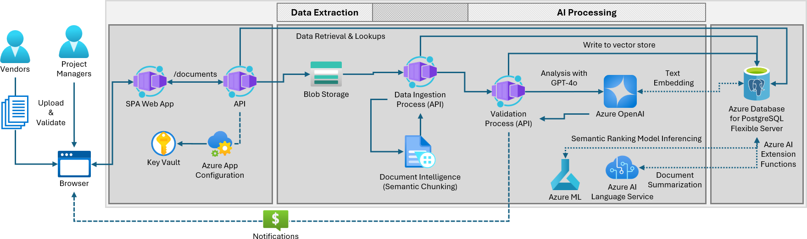
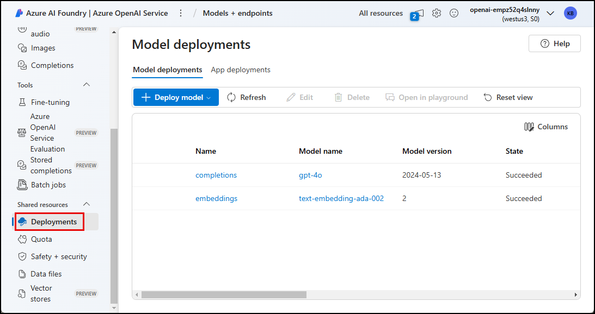

Validate Your Setup¶
SETUP IS COMPLETE!
You just completed the PROVISION and SETUP steps of workshop.
- You installed the required tools and software
- You forked the sample repo and created a local clone
- You provisioned infrastructure resources on Azure
- You deployed the REACT UI and Python API to Azure Container Apps
- You configured your local development environment
Here's a reminder of the Azure Application Architecture you can reference as you check your provisioned Resource Group to enure these resources were created.

In this section, you will validate your setup before moving on to the next phase of solution development.
1. Inspect deployed Azure resources¶
The Azure Portal allows you to view the resources provisioned on Azure and verify that they are setup correctly
-
Open a new browser tab and navigate to the link below. You may be prompted to login.
1https://portal.azure.com/#browse/resourcegroupsDoing the Instructor-Led Track?
If you are doing the Instructor-Led track and are prompted to sign in, use the
UsernameandPasswordfrom the 'Azure Credentials' section in your Skillable Lab instructions panel. -
You may be presented with a "Welcome to Microsoft Azure" screen. Select Cancel (to dismiss it) or click Get Started (to take an introductory tour of the Azure Portal).
-
You should be taken directly to the Resource Groups page for your subscription. In the list of resource groups, locate the one named
rg-postgresql-accelerator(or, if you assigned a different name, find that one). This resource group was created for you as part of theazd upresource deployment. It contains all of the Azure resources required to build and deploy your AI-enable solution.You can use the search filter to reduce the number resource groups displayed.
-
Select your resource group.
Review the list of deployed resources.
In addition to creating a resource group, the
azd upcommand deployed multiple resources into that resource group, as shown in the table below.Resource type Name Container Registry cr<unique_string>Log Analytics workspace log-<unique_string>Key Vault kv-<unique_string>Document Intelligence di-<unique_string>Language lang-<unique_string>Application Insights appi-<unique_string>Container Apps Environment cae-<unique_string>Storage account st<unique_string>Azure Database for PostgreSQL - Flexible Server psql-data<unique_string>Azure OpenAI openai-<unique_string>Machine Learning Workspace mlw-<unique_string>Machine Learning Endpoint mle-<unique_string>Container App ca-api-<unique_string>Container App ca-portal-<unique_string>The
<unique_string>token in the above resource names represents the unique string that is generated by the Bicep scripts when naming your resources. This ensures resources are uniquely named and avoid resource naming collisions.In addition to the above resources, you will also see several other resources, like Managed Identities, that are supporting resources for those in the table.
2. Ensure the deployed apps are running¶
The azd up command included steps to deploy the Woodgrove Bank application into Azure Container Apps (ACA). Two containers were created. One for the Woodgrove Bank portal UI and a second for the backend API that supports it.
Azure Container Apps (ACA) deployment
ACA is a fully managed serverless platform that allows you to deploy and manage containerized applications effortlessly. They simplify deployment, offer scalability and cost-effectiveness, and make it easier to focus on building applications without worrying about infrastructure management.
2.1 Confirm the Woodgrove API Is Running¶
-
In the browser window opened to your Azure resource group, select the Container app resource whose name starts with ca-api.
-
In the Essentials section of the API Container App's Overview page, select the Application Url to open the deployed Woodgrove Bank API in a new browser tab.
-
You should see a
Welcome to the Woodgrove Bank API!message on the screen, which serves as confirmation the API app was deployed successfully.
2.2 Open the Woodgrove Portal UI¶
-
In the Azure portal, return to the resource group containing your resources and select the Container app resource whose name begins with ca-portal.
-
In the Essentials section of the Portal Container App's Overview page, select the Application Url to open the deployed Woodgrove Bank Portal in a new browser tab.

-
In the Woodgrove Bank Contract Management Portal, select the Vendors page and verify the list of vendors loads correctly.
3. View Azure OpenAI model deployments in Azure AI Foundry¶
The Azure AI Foundry portal lets you view and manage the Azure AI resources for your app.
You will use the Azure AI Foundry portal to verify the gpt-4o and text-embedding-ada-002 models were deployed into your Azure OpenAI service.
-
In the Azure portal, return to the resource group containing your resources and select the Azure OpenAI resource.
-
On the Azure OpenAI resource's Overview page, select Explore Azure AI Foundry portal.
-
In Azure AI Foundry, select the Deployments menu item under Shared resources in the left-hand navigation menu.

-
Verify you see a
completionsdeployment for thegpt-4omodel and anembeddingsdeployment for thetext-embedding-ada-002model.
4. Verify Semantic Ranker Model Deployment (optional)¶
If you chose to deploy the Azure ML semantic ranker model during setup, you will use the Azure Machine Learning Studio to ensure the semantic ranker model was successfully deployed to an online endpoint.
-
In the Azure portal, return to the resource group containing your resources and select the Azure Machine Learning Workspace resoure.
-
From the Azure ML workspace page, select the Launch studio button to open Azure Machine Learning Studio in a new browser window.
-
Sign into Machine Learning Studio if prompted.
-
In Machine Learning Studio, select Endpoints under Assets in the left-hand resource menu, then select the endpoint for your
bge-v2-m3-reranker model: -
On your endpoint page, ensure the Provisioning state for the bgev2m3-v1 deployment is Succeeded.

Leave the Azure Portal open. You will revisit it later.